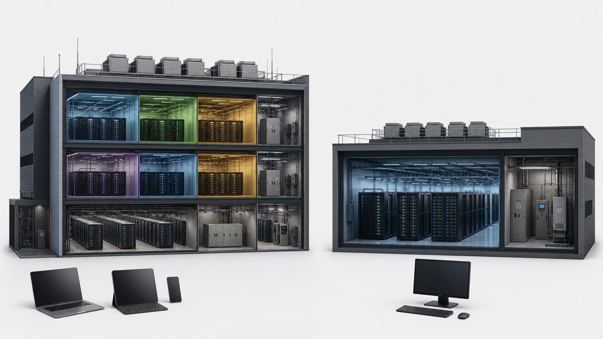

Cloud changes where resources run and who controls the infrastructure
S2.06.A01S2.06.A02
Cloud computing provides storage, processing, applications or platforms from remote infrastructure accessed through a network. The organisation uses the service without operating every physical server locally.
A public cloud is operated by a third-party provider and its underlying resources serve multiple customers with logical separation. A private cloud is dedicated to one organisation and may be operated by that organisation or on its behalf.
Public/private describes tenancy and control, not whether a file is publicly readable. Authentication, permissions and encryption remain necessary.
Shared facility and dedicated facility

One cloud request
- ClientAuthenticates and requests storage, processing or an application
- NetworkCarries the request to remote infrastructure
- Cloud serviceAllocates resources and returns the result
Public and private cloud
| Factor | Public cloud | Private cloud |
|---|---|---|
| Infrastructure | Provider-operated | Dedicated to one organisation |
| Tenancy | Underlying resources serve multiple customers | Organisation-only environment |
| Control | More provider control | More organisational control/configuration |
| Typical trade-off | Elastic capacity and lower initial infrastructure | Control/compliance with higher dedicated cost |
教师讲法 / 易错点
用 ownership、tenancy、control 三个词固定比较轴，避免学生只写 public=free、private=secure。